Ендодонтія · журнал «ДентАрт» 2023 №4
Ергономіка в сучасній ендодонтії. Перфорація зуба 12
The Complex Consequences of Simple Mistakes. Ergonomics in Modern Endodontics. Tooth Perforation 12
До уваги колег одна з багатьох клінічних ситуацій, які потрапляють до мене у практику. У цьому клінічному випадку було некоректно виконано ендодонтичний доступ і подальші маніпуляції, що поставило під сумнів функціонування зуба, якому загрожувало видалення. Виходячи з того, що нам невідомо, за яких умов провадилося лікування цього зуба, можемо тільки зробити припущення щодо причин, які призвели до таких помилок.
Про кут нахилу зубів і хибний доступ
Кожен день працюючи з пацієнтами, проводячи огляд, використовуючи дані прицільної рентгенограми і дані КПКТ та володіючи знаннями з анатомії, ми розуміємо, що зуби на верхній щелепі завжди розміщені під кутом, перекриваючи нижні. Але наша позиція біля пацієнта або проведення лікування стоячи часто призводять до того, що лікарі, плануючи доступ у центральному різці верхньої щелепи, допускають помилки у вигляді перфорацій зовнішньої стінки або роблять хибний хід. У будь-якому випадку, первинне це ендо чи повторне, стоматолог має вміти виправити помилку і довести лікування до успішного фіналу.
Аналізуючи за боковим/сагітальним реформатом КТ, можна легко побачити, під яким кутом розміщені зуби. Аналізуючи, в яких ділянках робляться перфорації, можна подумати, що лікарі уявляють, ніби зуби в щелепі розташовані вертикально, і можливо тому під час трепанації коронки зуба обирають неправильну вісь і таким чином надають наступним кроком помилковий хід ручним інструментам. Це, звісно, сарказм, але враження таке. Просто перед тим, як почати працювати бором, слід проаналізувати, під яким кутом стоїть зуб і чи немає ротації зуба. У мене достатньо багато візуального матеріалу, коли лікарі роблять величезні помилки в зубах, які ротовані по вісях. До чого це призводить і яким чином це можна виправити, спробую описати в наступному числі журналу.
Ергономіка лікаря
Щодо ергономіки лікаря можна багато сперечатись і все одно дійти висновку, що найкращий варіант роботи лікаря й асистента — це на 12 годин. Ясна річ, що нас того не вчать, але наше з вами завдання — знайти для себе сучасні та найефективніші методики.
Робота в мікроскоп, робота в дзеркало, правильна позиція пацієнта в кріслі, про яку багато хто не знає, робота в чотири руки, опора на підлокітники вашого крісла дають можливість працювати набагато довше, не втрачаючи ресурс і не отримуючи травм м’язів та проблем із хребтом. Ще наша робота залежить від наших знань, наших навиків, уміння працювати з апаратурою. Часто лікарі на моїх курсах розповідають про відсутність у клініках тих чи інших потрібних інструментів.
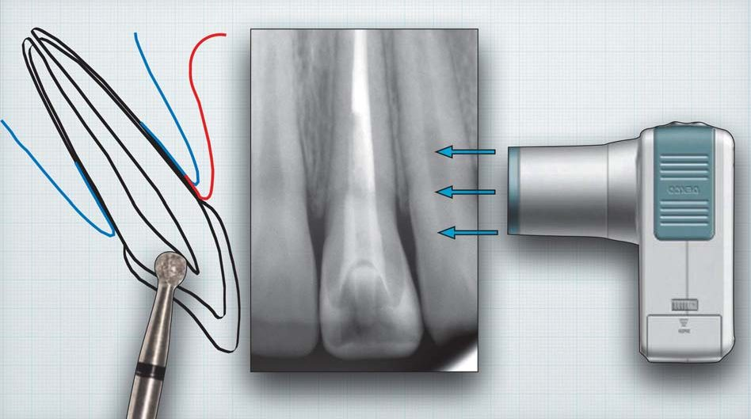
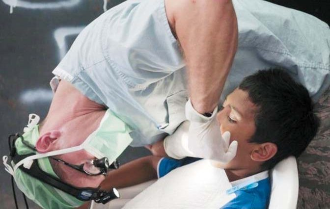
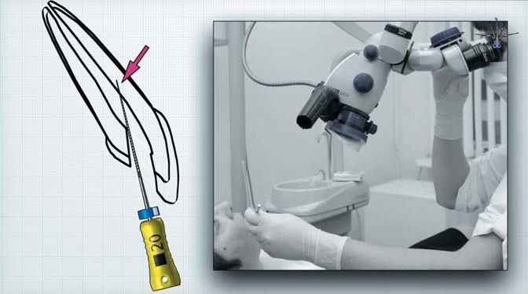
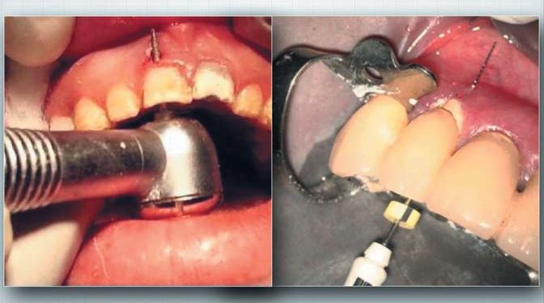
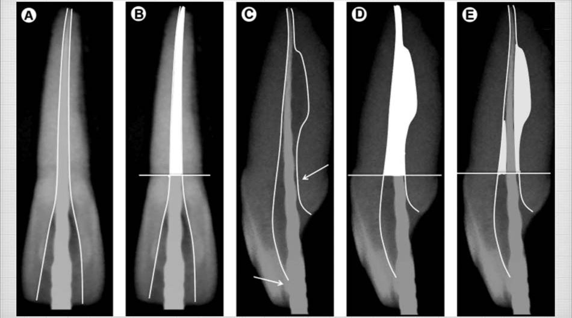
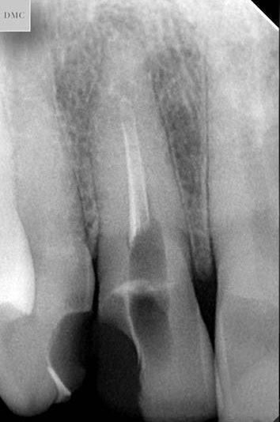
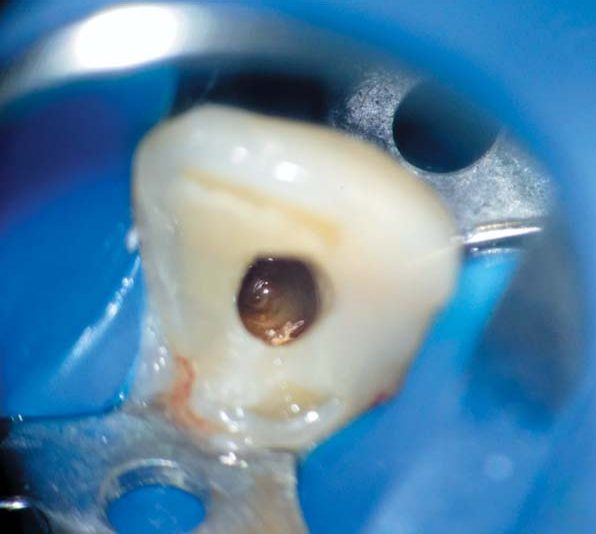
Але навіть у такій позі, як зафіксована на фото 2, можна вести лікування. Просто сам оператор не витримає її довго.
Зараз, коли говориш про ендодонтичне лікування, неявно думаєш про роботу в мікроскоп у 90 % і як мінімум у бінокуляри. Це сталося тому, що за двадцять років щільної роботи в мікроскоп у багатьох лікарів склалося розуміння, що роздивитися зуб детально, якісно без збільшення немає можливості.
Ще можу додати і знаю це напевно, що з тих лікарів, котрі побували на різних курсах з роботи в мікроскоп або навчалися працювати самостійно, багато хто так і не почав або не продовжив працювати в мікроскоп. А багато з тих, хто сперечався зі мною, намагаючись довести, що скоп — неважливий інструмент, з часом приходили і говорили, що помилялися і тепер без мікроскопа не можуть довіряти своїм очам. Тому кожному бажаю почати працювати в мікроскоп!
Потрібно зрозуміти, що в ендодонтії мікроскоп — це такий самий золотий стандарт, як і робота з рабердамом. Це та сама дисципліна, коли ти не дозволиш собі зробити неправильно або неякісно. Один раз почавши користуватся магією мікроскопа, розумієш, що непомітно для себе жодна з маніпуляцій не проводиться!
Уміння працювати в дзеркало — це вирішальний фактор ергономіки оператора, що працює в мікроскоп. Власне, вміння працювати у зворотне зображення визначає подальшу довготривалу роботу зі збільшенням. І краще для цього підходять дзеркала з родієвим покриттям #3 та #0 (для кутніх зубів). І ніколи не використовуйте дзеркала, які збільшують, тому що вони деформують зображення.
Клінічний випадок
Тепер повернімося до клінічного випадку. Зі слів пацієнта, його перше звернення в іншу установу було під час загострення хронічного процесу. У нашу клініку пацієнт звернувся вже на тому етапі, коли була зроблена перфорація, а магістральний канал усе ще не був розпломбований. Якщо проаналізувати ситуацію, то виходить, що у пацієнта апікальний періодонтит у стадії загострення, некоректна обтурація та інфікована автоматично свіжа перфорація мезіальної стінки кореня (попередньо прогноз хороший). На момент звернення зуб без тимчасової пломби, якої, по суті, і не було — теж зі слів пацієнта (фото 6). Пацієнт наприкінці першого візиту сказав, що вживає препарати, які розріджують кров, це дуже добре видно на фото 7.
Тобто причин для видалення зуба достатньо, але з розвитком ендодонтії все перераховане не є показом до видалення такого зуба.
Щоб кров не заливала робоче поле, я використовую тефлон для ізоляції перфораційного отвору (фото 8). Таким чином ви зможете спокійно працювати з істинним каналом і робити його ревізію. У цьому клінічному випадку для дезобтурації було використано систему файлів AZURE (Endostar E3 Azure Basic). Завдяки їх властивостям вдалося швидко розпломбувати канал і провести медикаментозну обробку. У систему входять лише три файли — 30/08 — устьовий файл, 25/06 — формуючий файл і 30/04 — фінішний файл.
Після медикаментозної обробки слід обов’язково провести калібрування апікальної ділянки каналу. Калібрування залежить від кількох факторів, але в цьому випадку у нас одноканальний зуб зі змінами в апікальній ділянці і, як правило, з резорбованою частиною апікальної ділянки. Тому на самому етапі калібрування, фактично створюючи новий дизайн внутрішньої частини каналу, я використовую стальні файли великих розмірів під контролем апекслокатора. Зробивши ці кроки, ми можемо переходити або до завершення і обтурації, або, як у нашому випадку, маємо залишити гідроксид кальцію і перекрити доступ фотополімерним матеріалом адгезивно.
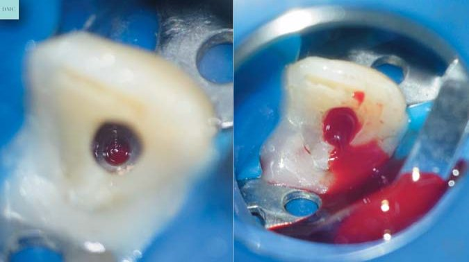
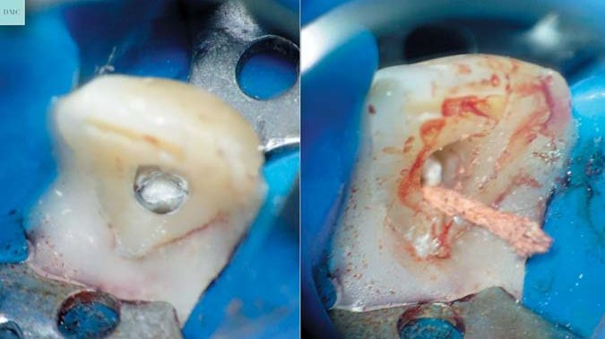
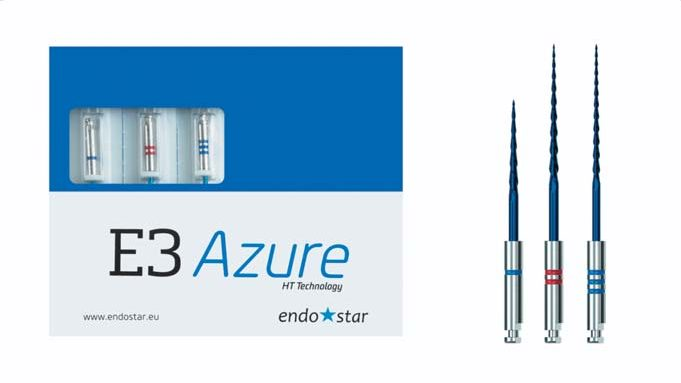
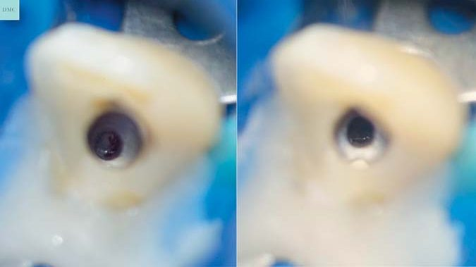
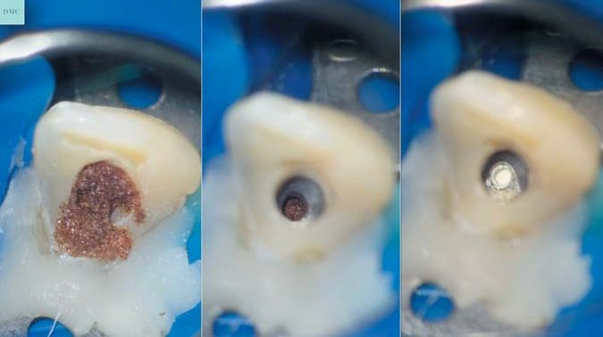
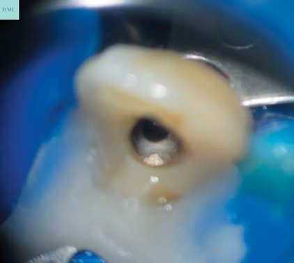
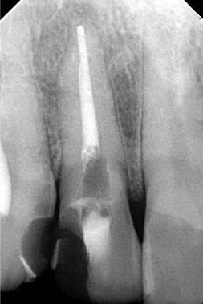
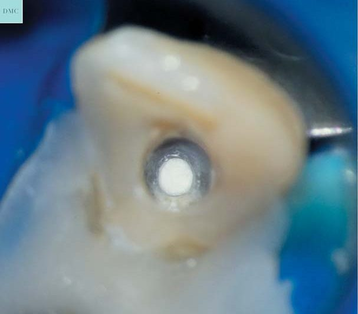
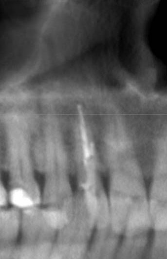
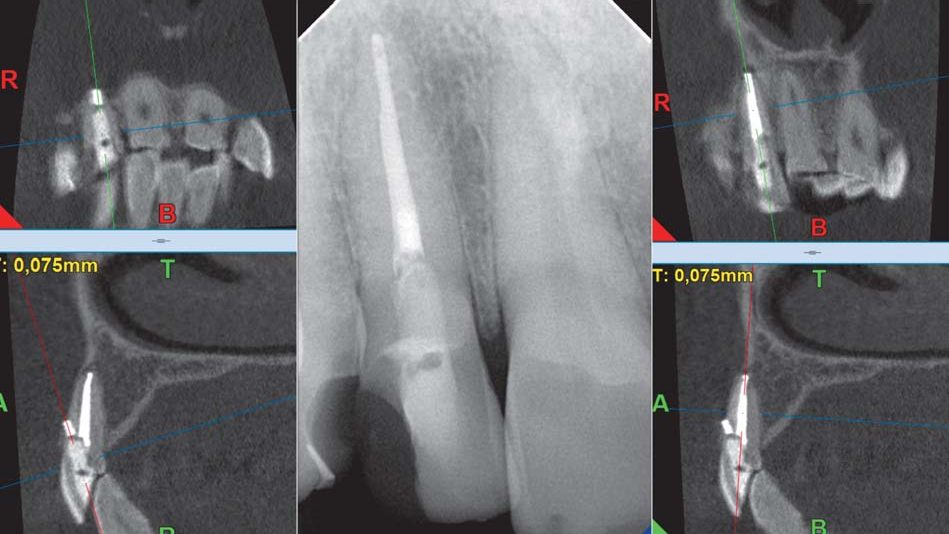
Закриття перфорації
До наступного візиту пацієнт прийшов підготовлений — за три дні до візиту він перестав уживати препарати, які розріджують кров. Завдяки цьому вдалося завершити пломбування каналу. Але залишилася перфорація. Зазвичай після видалення тефлону з перфорації кров або гній ще можуть виділятися, і цей клінічний випадок — не виняток. Було отримано порцію ексудату, після промивання перфорації стало досить добре видно стан тканин у зоні перфорації.
Враховуючи розміри перфорації, внесення MTA, IRM або біокераміки достатньо складне без виведення порції за межі зуба. Запобігти цьому можна, якщо використати гемостатичну губку, завдяки якій можна створити умови, щоб будь-який використаний цемент мав би на неї опір, як на основу, і не випадав за межі перфорації при конденсації матеріалу плагерами.
Кількість порцій цементу залежить від об’єму перфорації і кута бора або розгортки. У нашому випадку перфорація об’ємна, але коротка — 3–4 міліметри. Були випадки, коли перфорація ішла вздовж кореня каналу і довжина сягала і 11, і 15 мм. У таких випадках, якщо перфорація не об’ємна, її можна перевести і надати статус каналу і навіть запломбувати гутою, але якщо перфорацію зроблено чимось на кшталт розгортки або бора, то головне — визначити її розмір і довжину.
Уся робота виконувалася під анестезією, з використанням рабердаму, і під час іригації каналу було використано гіпохлорит 5.25 % та лимонну кислоту. Канал обтуровано гутаперчею і силером АН+. Перфорацію запломбовано цементом МТА.
Висновки
Ситуація, як у цьому клінічному випадку, не критична для її виправлення, тому що таких робіт у практиці достатньо, щоб уже мати досвід і обрати правильну тактику лікування. Більш важливо, щоб таких прикрих помилок не допускали, але поки що вони трапляються. Уважніше збирайте анамнез, щоб не з’ясовувати під час роботи, які препарати пацієнт уживає, як це було в цьому клінічному випадку.
Для того, щоб можна було краще зрозуміти, продумати свої кроки і уважно роздивитися деталі клінічних випадків, я і мої колеги старанно все фотографуємо і комбінуємо фото. Таким чином ви зможете використати такі ж методи або на основі інформації задіяти свою тактику.
Я всім бажаю успіхів! І рекомендую почати працювати в мікроскоп!